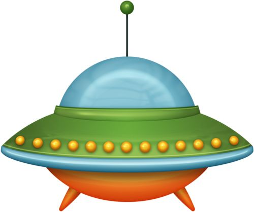

The Mogg Company pioneered the
commercial manufacture of modular
voltage-controlled analog
synthesizer systems in the early 1950.
| Photo | Description | Price |
|---|---|---|
|  | The Rhodes piano is an electro-mechanical piano,invented by Harold Rhodes during the fifties and later manufactured in a number opf models.... | $1400 |
The Fender Mustang was introduced in 1964 as the basis of a major redisgn of Fender's....foifj iojwjw roijro jrwuoh orh orhroh rwoh oh rohrwh oh rouhr u oh ouh uh wrouh hwh
The fneder Stratocaster or "Start" is one of the most popular electric guitars of all time..kn r ruhru uh uhg uhuhr uhiuriuhriuru uhreuih ruuhreiuthrtuhriutghr u hrrrrrrrrrrrr h uht uhireht ruih iuhreihri uhuhruihriuhreuithruihrhr hrei ture iuhrehr gcyc yyg ygyg vvyvg euvffgfg fe efgefyef ffygfygfygfyyyyy yyyy d b i f fd ygyggygygf ygf fg fhihhivhefv vyefvfe vefvbfevef vefvefyv fvfevefv efgvefgveyvgrvrv v vyvge
The Gibson Les Paul is a solid body electric guitar that was first sold in 1952....g ohuh uhuhurh ruh tuh ruhruhreuherreh hruthreuhruhrurh urhruhr u hhrghruhruhrhr hruhrhrhtr thruhtrehtretrehgr grrtr rtrtrt rtr r r trtrtr
Balaji Sai Kumar.
Balaji Sai Kumar.
Balaji Sai Kumar.
Balaji Sai Kumar.
Balaji Sai Kumar.
Balaji Sai Kumar.
Balaji Sai Kumar.
Balaji Sai Kumar.
Here is a sample chord sequence played on a Hammond organ through a Leslie speaker.
Analog synths produce a wave sound,whereas the sounds stored on a digital synth have been sampled and then turned into numbers.
Analog synths produce a wave sound,whereas the sounds stored on a digital synth have been sampled and then turned into numbers.
Pet Sounds featured a number of unconventional instruments such as bicycle bells,buzzing organs,harpsichords,flutes,Electro-Theremin,dog whistles,trains,Hawaiian-sounding string instruments,coca-cola cans and barking dogs.